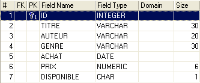
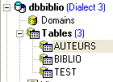
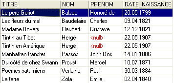
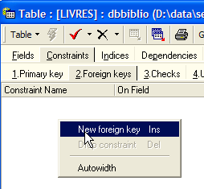
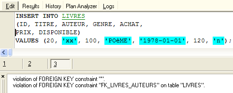
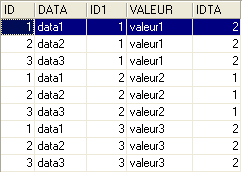
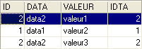

5. Relações entre tabelas
5.1. Chaves estrangeiras
Uma base de dados relacional é um conjunto de tabelas ligadas entre si por relações. Vejamos um exemplo inspirado na tabela [BIBLIO] anterior, que tinha a seguinte estrutura:

Um exemplo do conteúdo era o seguinte:

Poderá querer obter informações sobre os vários autores destas obras, tais como os seus nomes próprios e apelidos, data de nascimento e nacionalidade. Vamos criar essa tabela. Clique com o botão direito do rato em [DBBIBLIO / Tabelas] e selecione a opção [Nova Tabela]:

Agora vamos criar a seguinte tabela [AUTHORS]:
 |  |
chave primária da tabela — utilizada para identificar de forma única uma linha | |
apelido do autor | |
nome do autor, se aplicável | |
data de nascimento | |
país de origem |
O conteúdo da tabela [AUTHORS] pode ser o seguinte:

Voltemos à tabela [BIBLIO] e ao seu conteúdo:
Na coluna [AUTHOR] da tabela, já não é necessário introduzir o nome do autor. Em vez disso, é preferível introduzir o número de identificação que lhes foi atribuído na tabela [AUTHORS]. Vamos criar uma nova tabela chamada [BOOKS]. Para a criar, utilizaremos o script [biblio.sql] criado na secção 3.14. Executamos este script utilizando a ferramenta [Script Executive, Ctrl-F12]:

Modificamos o script para criar a tabela BIBLIO, de modo a adaptá-lo à tabela BOOKS:
Iremos apenas comentar as alterações:
- linha 4: a coluna [AUTHOR] na tabela passa a ser um inteiro. Este número faz referência a um dos autores na tabela [AUTHORS] criada anteriormente.
- Linhas 11–19: Os nomes dos autores foram substituídos pelos seus IDs de autor.
- linha 29: o nome da restrição foi alterado. Anteriormente, chamava-se [UNQ1_BIBLIO]. Agora chama-se [UNQ1_LIVRES]. Este nome pode ser qualquer coisa. No entanto, é preferível que seja significativo. Aqui, esse esforço não foi feito. As restrições em campos diferentes e em tabelas diferentes dentro de uma base de dados devem ser distinguidas por nomes diferentes. Recorde-se que a restrição na linha 29 exige que um título seja único dentro da tabela.
- Linha 36: Altere o nome da restrição na chave primária ID.
Vamos executar este script. Se for bem-sucedido, obtemos a seguinte nova tabela [BOOKS]:
 |  |
Poder-se-á questionar se, no final, ganhámos realmente alguma coisa. De facto, a tabela [BOOKS] lista os números dos autores em vez dos seus nomes. Uma vez que existem milhares de autores, associar um livro ao seu autor parece difícil. Felizmente, o SQL está aqui para nos ajudar. Permite-nos consultar várias tabelas ao mesmo tempo. Para este exemplo, apresentamos a consulta SQL que nos permite recuperar os títulos dos livros da biblioteca, juntamente com as informações dos seus autores. Vamos usar o editor SQL (F12) para executar a seguinte instrução SQL:
SQL> select LIVRES.titre, AUTEURS.nom, AUTEURS.prenom,AUTEURS.date_naissance
FROM LIVRES inner join AUTEURS on LIVRES.AUTEUR=AUTEURS.ID
ORDER BY AUTEURS.nom asc
Ainda é cedo para explicar esta consulta SQL. Voltaremos a ela em breve. O resultado desta consulta é o seguinte:

Cada livro foi corretamente associado ao seu autor e às informações associadas.
Vamos resumir o que acabámos de fazer:
- temos duas tabelas que contêm diferentes tipos de informação:
- a tabela AUTHORS contém informações sobre autores
- a tabela BOOKS contém informações sobre os livros adquiridos pela biblioteca
- estas tabelas estão ligadas entre si. Um livro deve ter um autor. Pode até ter vários. Este cenário não foi considerado aqui. O campo [AUTHOR] na tabela [BOOKS] faz referência a uma linha na tabela [AUTHORS]. Isto é chamado de relação.
A relação entre a tabela [BOOKS] e a tabela [AUTHORS] é, na verdade, um tipo de restrição: uma linha na tabela [BOOKS] deve ter sempre um ID de autor que exista na tabela [AUTHORS]. Se uma linha em [BOOKS] tivesse um ID de autor que não existisse na tabela [AUTHORS], estaríamos numa situação anómala em que não conseguiríamos encontrar o autor de um livro.
O SGBD é capaz de garantir que esta restrição seja sempre satisfeita. Para tal, iremos adicionar uma restrição à tabela [BOOKS]:
 |  |  |
A ligação que une a coluna [AUTHOR] da tabela [BOOKS] ao campo [ID] da tabela [AUTHORS] é denominada relação de chave estrangeira. O campo [AUTHOR] da tabela [BOOKS] é designado como «chave estrangeira» no assistente acima. Definir uma chave estrangeira significa que o valor de uma coluna [c1] numa tabela [T1] deve existir na coluna [c2] da tabela [T2]. A coluna [c1] é referida como a «chave estrangeira» da tabela T1 na coluna [c2] da tabela [T2]. A coluna [c2] é frequentemente a chave primária da tabela [T2], mas isso não é obrigatório.
Definimos a chave estrangeira [AUTHOR] da tabela [BOOKS] no campo [ID] da tabela [AUTHORS] da seguinte forma:
 |
- nome da restrição: livre
- coluna "chave estrangeira", neste caso a coluna [AUTHOR] da tabela [BOOKS]
- tabela referenciada pela chave estrangeira. Aqui, a coluna [AUTHOR] na tabela [BOOKS] deve ter um valor na coluna [ID] da tabela [AUTHORS]. Portanto, a tabela [AUTHORS] é a tabela referenciada.
- Coluna referenciada pela chave estrangeira. Aqui, a coluna [ID] da tabela [AUTHORS].
Validamos esta restrição:

Se tudo correr bem, é aceite:

Qual é a consequência desta nova restrição de chave estrangeira? Utilizando o editor SQL (F12), vamos tentar inserir uma linha na tabela BOOKS com um ID de autor inexistente:

A operação [INSERT] acima tentou inserir um livro com um ID de autor inexistente (100). A execução da consulta falhou. A mensagem de erro associada indica que houve uma violação da restrição de chave estrangeira "FK_BOOKS_AUTHORS". Esta é a que acabámos de definir.
5.2. Operações de junção entre duas tabelas
Ainda na base de dados [DBBIBLIO] (ou qualquer outra base de dados), vamos criar duas tabelas de teste denominadas TA e TB e defini-las da seguinte forma:
Tabela TA
- ID: chave primária da tabela TA - DATA: dados arbitrários |  |
Tabela TB
 - ID: chave primária da tabela TB - IDTA: chave estrangeira da tabela TB que faz referência à coluna ID da tabela TA. Assim, um valor da coluna IDTA da tabela TA deve existir na coluna ID da tabela TA - VALUE: quaisquer dados |  |
No editor SQL (F12), iremos executar instruções SQL que utilizam simultaneamente as tabelas TA e TB.

A instrução SQL utiliza a palavra-chave FROM para referenciar as tabelas TA e TB. A operação FROM TA, TB fará com que seja criada uma nova tabela temporária, na qual cada linha da tabela TA será unida a cada linha da tabela TB. Assim, se a tabela TA tiver NA linhas e a tabela TB tiver NB linhas, a tabela resultante terá NA x NB linhas. Isto é mostrado na captura de ecrã acima. Além disso, cada linha contém as colunas de ambas as tabelas. As colunas especificadas na ordem [SELECT col1, col2, ... FROM ...] indicam quais devem ser incluídas. Aqui, a palavra-chave * indica que todas as colunas da tabela resultante são solicitadas. A tabela resultante da instrução SQL anterior é por vezes referida como o produto cartesiano das tabelas TA e TB.
Acima, cada linha da tabela TA foi associada a cada linha da tabela TB. Geralmente, queremos associar uma linha de TB a uma linha de TA que tenha uma relação com ela. Esta relação assume frequentemente a forma de uma restrição de chave estrangeira. É o que acontece aqui. A uma linha na tabela TA, podemos associar as linhas na tabela TB que satisfazem a relação TB.IDTA=TA.ID. Existem várias formas de consultar isto:
A instrução SQL anterior é semelhante à anterior, com duas diferenças:
- as linhas de resultado do produto cartesiano TA x TB são filtradas por uma cláusula WHERE que associa a uma linha na tabela TA apenas as linhas da tabela TB que satisfazem a relação TB.IDTA=TA.ID
- apenas determinadas colunas são solicitadas utilizando a sintaxe [T.col], em que T é o nome de uma tabela e col é o nome de uma coluna nessa tabela. Esta sintaxe resolve qualquer ambiguidade que possa surgir se duas tabelas tiverem colunas com o mesmo nome. Quando esta ambiguidade não existe, a sintaxe [col] pode ser utilizada sem especificar a tabela para essa coluna.
O resultado é o seguinte:

O mesmo resultado pode ser obtido com a seguinte instrução SQL:
O termo [inner join] dá origem ao nome «inner join» atribuído a este tipo de operação entre duas tabelas. Veremos que também existe um «outer join». Num inner join, a ordem das tabelas na consulta não tem efeito no resultado: FROM TA inner join TB é equivalente a FROM TB inner join TA.
A ordem SQL anterior inclui no conjunto de resultados apenas as linhas da tabela TA que são referenciadas por pelo menos uma linha da tabela TB. Assim, a linha [3, data3] em TA não aparece no resultado porque não é referenciada por uma linha em TB. Poderá querer todas as linhas de TA, sejam elas referenciadas ou não por uma linha em TB. Nesse caso, utiliza-se uma junção externa à esquerda entre as duas tabelas:

Aqui temos uma junção externa à esquerda. Para compreender o termo «FROM TA left outer join TB», imagine uma junção com a tabela TA à esquerda e a tabela TB à direita. Todas as linhas da tabela à esquerda aparecem no resultado de uma junção externa à esquerda, mesmo aquelas para as quais a condição de junção não é satisfeita. Esta condição de junção não é necessariamente uma restrição de chave estrangeira, embora esse seja o caso mais comum.
Na seguinte ordem:
a tabela TB está no lado «esquerdo» da junção externa. Portanto, todas as linhas da TB aparecerão no resultado:

Ao contrário de uma junção interna, a ordem das tabelas é importante neste caso. Existem também as junções externas à direita:
- FROM TA LEFT OUTER JOIN TB é equivalente a FROM TB RIGHT OUTER JOIN TA: a tabela TA está à esquerda
- FROM TB LEFT OUTER JOIN TA é equivalente a FROM TA RIGHT OUTER JOIN TB: a tabela TB está à esquerda
Agora que compreendemos os conceitos básicos da consulta simultânea a várias tabelas, podemos avançar para consultas de bases de dados mais complexas.